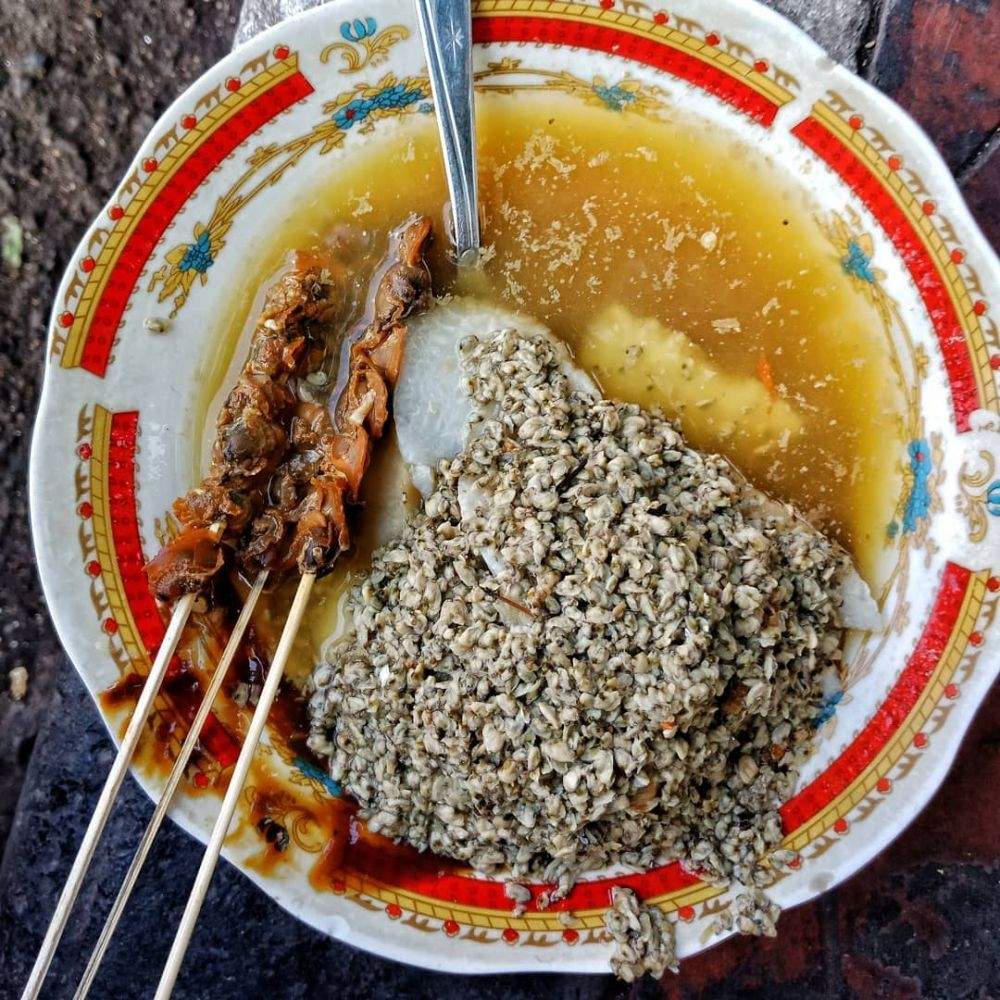
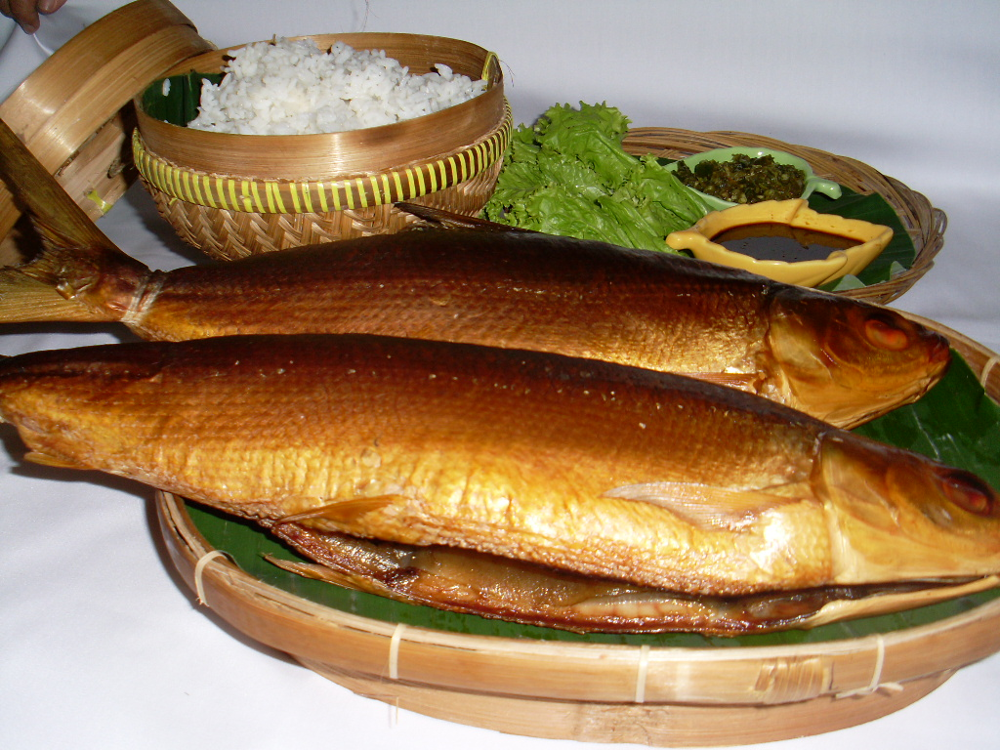
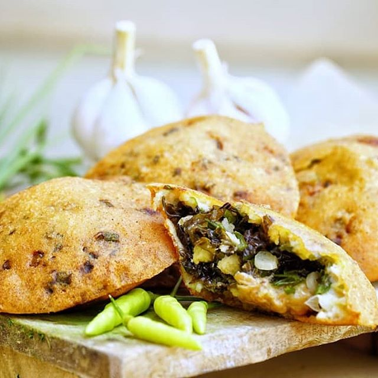
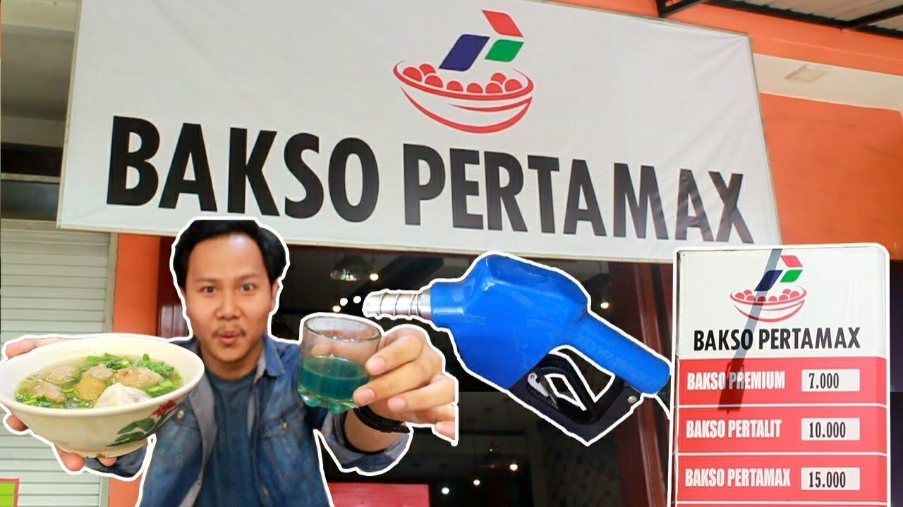

Culinary
Lontong Kupang

Lontong kupang is a dish of lontong slices that are doused with a sauce that has been flavored with garlic, chilies and special spices in Sidoarjo, namely petis. After dousing the broth, the lontong is poured again with boiled mussels and the broth. To arouse your appetite, sprinkle fried onions on top of the mussels.
Smoked Bandeng

Smoked bandeng is a typical food of Sidoarjo, East Java. It is processed from fresh bandeng which is ripened by smoking, producing smoked bandeng with a distinctive and delicious taste. These processed foods can also last several days without being stored in the refrigerator, so they make great souvenirs.
Ote Ote Porong

So far, if you hear ote ote, it must immediately lead to cheap and doubtful street food snacks. But this typical Porong ote is indeed a different class than the usual ote ote.
made with chicken, oyster and mushroom filling and covered by a thin and crispy skin, this ote ote porong is very suitable for a typical souvenir from Sidoarjo.
Bakso Pertamax

A bowl of meatballs at Warung Bakso Pertamax is like a typical meatball soup which contains meatballs, mustard chunks, complete with fried dumplings and doused with plain clear meat sauce. But not only that, when served, these meatballs are completed with colorful sauce in a tiny glass. The color matches the name BBM. When you want to eat colored sauce, just pour it into the bowl filled with clear broth.